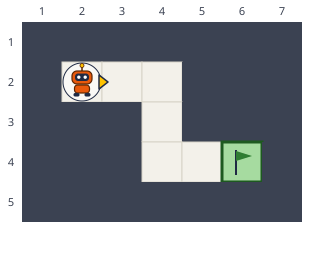

Sequence
Learn with an AI tutor
An AI tutor explains this page to you and helps you with the exercises. Choose your assistant:
Open with Claude Open with ChatGPT Open with Mistral Vibe
You use your own account with the provider. The assistant is not offered by lernapps.net: lernapps only provides the content and the exercises. The choice holds for all pages, on this device only.
Mia is Kiko
In class 7b's group chat, the evening before computing:
Frau Berg: Tomorrow we'll play again, on the board on the floor. This time with just three cards: forward, turn left, turn right. Who's Kiko?
Mia: Me again!
Jona: Then I'll lay the cards 😄
Here you learn to bring Kiko to the goal with three commands.
Exercise
Solution
Square A
You counted “turn left” as “turn and move one square”. When Kiko turns, it stays on its square.
Square B right answer
Right: forward, turn left, forward.
Square C
That would happen if Kiko turned first. But the first card is “move forward”.
Square D
You mixed up left and right. Kiko faces right on the board. If it turns left, it faces up the board.
Forward to column 3, row 4. Turn left: Kiko faces up the board. Forward to column 3, row 3.
Three commands in a fixed order
Kiko knows three commands: move forward (one square forward) and turn left and turn right (a quarter turn on the spot). A command is a simple instruction that Kiko knows and can carry out directly.
- sequence
A sequence is a series of instructions that are carried out one after another, each exactly once, in the order in which they are written.
Remember
Turning only changes the direction Kiko faces; it stays on its square. Left and right are from Kiko's point of view. Turning the same way twice is a half turn: Kiko then faces back. And the order matters.
Try it yourself
Without a computer, in threes or fours (on your own: a board on squared paper, a game piece is Kiko):
- Print the board and the command cards, or tape a board on the floor.
- Cut Kiko, the goal and walls out of the board sheet and lay them out.
- One person lays the cards one below the other.
- One person is Kiko and follows the cards exactly, from top to bottom.
- If Kiko misses the goal, find the wrong card together. Then swap roles.


With a computer: in the workshop, the cards become blocks with the same words. The square in column 4, row 2 is called (4|2) there. Bring Kiko to the flag: open the challenge “Kiko walks to the flag”

© CC-BY-4.0This is what the challenge looks like in the workshop.
Practice
Exercise
Solution
Right answer: 9
7 “move forward” cards and 2 turns: left, then right.
Exercise
Solution
forward, forward, right, forward, forward, forward right answer
Right: 2 squares up, turn right, 3 squares to the goal.
forward, forward, left, forward, forward, forward
Turning left makes Kiko face the wall. From its point of view the goal is on the right.
forward, forward, forward, right, forward, forward
On the third “forward” Kiko walks into the wall. The bend comes after 2 squares.
right, forward, forward, forward, forward, forward
The cards are right, the order is not: Kiko walks into the wall.
First go straight to the bend, then turn, then go on to the goal.
Exercise
Three worked tasks, each with its solution:
Task no. 1
Kiko is in a long, straight corridor. It moves forward 3 times, turns right twice and moves forward 2 times. How many squares is Kiko away from its starting square now?
Hint
Which way does Kiko face after two right turns?
Solution
- After moving forward 3 times, Kiko is 3 squares from the start.
- Two quarter turns to the right make a half turn. Kiko now faces back towards the start.
- It goes 2 squares back: 3 − 2 = 1 squares from the start.
Right answer: 1
Task no. 2
Kiko is in a long, straight corridor. It moves forward 8 times, turns right twice and moves forward 5 times. How many squares is Kiko away from its starting square now?
Hint
Which way does Kiko face after two right turns?
Solution
- After moving forward 8 times, Kiko is 8 squares from the start.
- Two quarter turns to the right make a half turn. Kiko now faces back towards the start.
- It goes 5 squares back: 8 − 5 = 3 squares from the start.
Right answer: 3
Task no. 3
Kiko is in a long, straight corridor. It moves forward 7 times, turns right twice and moves forward 4 times. How many squares is Kiko away from its starting square now?
Hint
Which way does Kiko face after two right turns?
Solution
- After moving forward 7 times, Kiko is 7 squares from the start.
- Two quarter turns to the right make a half turn. Kiko now faces back towards the start.
- It goes 4 squares back: 7 − 4 = 3 squares from the start.
Right answer: 3
Exercise
Solution
Right answer: The statement is false.
Turning does not move Kiko off its square. Only after that does “move forward” take it to the square that was on its left before.
Looking back and what comes next
Your first program has taken Kiko to the goal. That ends the chapter: spotting algorithms, checking them and writing them down as a sequence. Mia writes: “Jona had to lay new cards for every wall.” In the next chapter Kiko learns to notice walls itself.
Found a mistake or have an idea for this app?